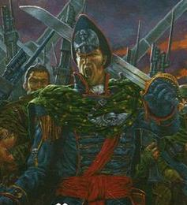

Forums galactiques > Assemblée Galactique : diplomatie officielle > Le faiseur de Fantomes
Pages : 1
| Ibram Gaunt Respect diplomatique : 3  01/06 ETU 21:03 | Score : 3 Détails En ouvrant les yeux, Ibram Gaunt, ancien commissaire impérial, trouva face à lui ses propres trais allongés. Des arbres d’un vert aussi mat que celui d’un océan la nuit défilaient sous eux.
« Nous amorçons la phase d’approche finale colonel-commissaire. » Gaunt se détourna de son image renvoyée par le verre épais du petit hublot, et contempla son adjudant. Sym était un homme efficace d’âge mûr, au visage légèrement bouffi marqué en travers de la gorge et de la joue par une ancienne brûlure. « Nous amorçons la phase d’approche finale. » « J’avais entendu, » lui dit Gaunt en hochant la tête. « Prévenez les hommes. Nous nommerons cette planète d’exil Tanith Prime, mais elle ne remplacera jamais l’originale.» Les pensées du jeune officier se tournèrent à nouveau vers le passé, vers Tanith la verdoyante. Il revoyait les hommes, ses hommes combattre l’avant-garde de cette flotte du Chaos qui s’était lancée à l’assaut de Tanith. Sur les deux régiments de soldats, il n’avait pu sauver que quelques compagnies. De même, sur la flotte de défense planétaire, seuls une soixantaine de vaisseaux avaient été sauvés. Et encore la plupart étaient des vaisseaux civils… Quelle horreur que cette terrible nuit où un monde a été détruit, et de nombreux hommes avaient perdus leur patrie. HRP//Merci de ne pas poster, topic à RP ^^. |
Pages : 1
Forums galactiques > Assemblée Galactique : diplomatie officielle > Le faiseur de Fantomes